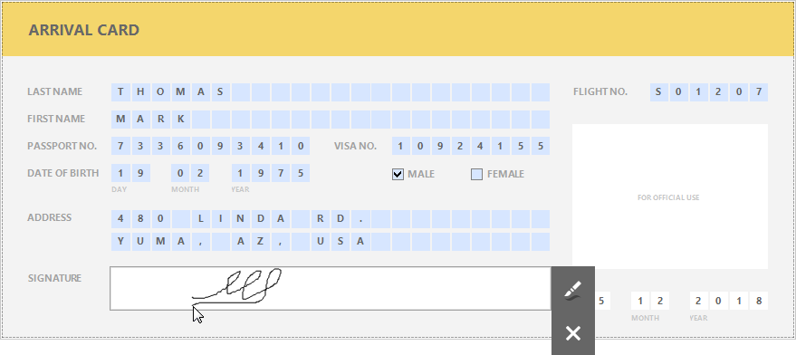

Create an Interactive E-Form
This tutorial describes how to create an electronic form and make it fillable directly in Print Preview before printing or exporting it.

To get started with this tutorial, create a new report or open an existing one.
Use a Preprinted Form Template
Use a picture watermark as a template to display an image of the preprinted form on the report's body.
Open the Toolbar's Page tab and click the Watermark button.

In the invoked Watermark dialog, switch to the Picture Watermark tab and click the Browse button. In the Select Picture dialog, select the image file with a required preprinted form and click Open.

If required, specify the position, sizing mode, transparency and other options for the picture.

To display the watermark on the design surface, open the Toolbar's View tab and enable the Watermark option.

The following image illustrates a report with a watermark providing a template of the preprinted form at design time.

Provide Content Controls
The next step is to provide the report with controls whose content should be customizable in preview mode.
Add the Character Comb controls to the report for all required fields to allow entering characters in individual cells one by one.

Select all the added controls, clear their text and switch to the Character Comb Tools contextual toolbar tab. Adjust cell settings, such as Width, Height, Horizontal Spacing, etc.

Enable content editing in Print Preview for the same controls. Go to the Property Grid, expand the Edit Options property and set the Enabled property to Yes.

For controls intended for entering letters only, invoke a drop-down list for the Editor Name property and select the required item from the Letters category to assign an editor with the corresponding mask.

To provide a mask for editing integer values, set the Editor Name property to Integer Positive

Add two Check Box controls to the report for selecting a gender. Then, change their text and appearance settings.

To enable switching check box states in Print Preview, set the Edit Options | Enabled property to Yes as you did before. To allow selecting only one option at a time, combine these check boxes into a logical group by specifying the same value for the Group ID property.

Get the Result
The e-form report is now ready. Switch to Print Preview to see the result.
To highlight all editing fields available in the form, click the  Editing Fields button on the Print Preview toolbar. Clicking a field invokes the appropriate editor. To apply the entered values and navigate between editing fields, use the TAB and SHIFT+TAB key combinations.
Editing Fields button on the Print Preview toolbar. Clicking a field invokes the appropriate editor. To apply the entered values and navigate between editing fields, use the TAB and SHIFT+TAB key combinations.